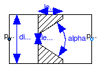
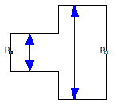
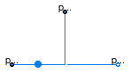

Extends from Modelica.Fluid.Icons.VariantLibrary (Icon for a library that contains several variants of one component).
| Name | Description |
|---|---|
| SimpleGenericOrifice | Simple generic orifice defined by pressure loss coefficient and diameter (only for flow from port_a to port_b) |
| SharpEdgedOrifice | Pressure drop due to sharp edged orifice (for both flow directions) |
| AbruptAdaptor | Pressure drop in pipe due to suddenly expanding or reducing area (for both flow directions) |
| Multiply a port; useful if multiple connections shall be made to a port exposing a state | |
| Splitting/joining component with static balances for an infinitesimal control volume | |
| Splitting/joining component with static balances for a dynamic control volume | |
| Base classes used in the Fittings package (only of interest to build new component models) |

This pressure drop component defines a simple, generic orifice, where the loss factor ζ is provided for one flow direction (e.g., from loss table of a book):
Δp = 0.5*ζ*ρ*v*|v|
= 8*ζ/(π^2*D^4*ρ) * m_flow*|m_flow|
where
Since the pressure loss factor zeta is provided only for a mass flow from port_a to port_b, the pressure loss is not correct when the flow is reversing. If reversing flow only occurs in a short time interval, this is most likely uncritical. If significant reversing flow can appear, this component should not be used.
Extends from Modelica.Fluid.Interfaces.PartialTwoPortTransport (Partial element transporting fluid between two ports without storage of mass or energy), Modelica.Fluid.Interfaces.PartialLumpedFlow (Base class for a lumped momentum balance).
| Type | Name | Default | Description |
|---|---|---|---|
| replaceable package Medium | PartialMedium | Medium in the component | |
| Length | pathLength | 0 | Length flow path [m] |
| Diameter | diameter | Diameter of orifice [m] | |
| Real | zeta | Loss factor for flow of port_a -> port_b | |
| Boolean | use_zeta | true | = false to obtain zeta from dp_nominal and m_flow_nominal |
| AbsolutePressure | dp_nominal | 1e3 | Nominal pressure drop [Pa] |
| MassFlowRate | m_flow_nominal | 1 | Mass flow rate for dp_nominal [kg/s] |
| Assumptions | |||
| Boolean | allowFlowReversal | system.allowFlowReversal | = true to allow flow reversal, false restricts to design direction (port_a -> port_b) |
| Dynamics | |||
| Dynamics | momentumDynamics | Types.Dynamics.SteadyState | Formulation of momentum balance |
| Advanced | |||
| AbsolutePressure | dp_start | 0.01*system.p_start | Guess value of dp = port_a.p - port_b.p [Pa] |
| MassFlowRate | m_flow_start | system.m_flow_start | Guess value of m_flow = port_a.m_flow [kg/s] |
| MassFlowRate | m_flow_small | system.m_flow_small | Small mass flow rate for regularization of zero flow [kg/s] |
| Boolean | from_dp | true | = true, use m_flow = f(dp) else dp = f(m_flow) |
| AbsolutePressure | dp_small | system.dp_small | Turbulent flow if |dp| >= dp_small [Pa] |
| Diagnostics | |||
| Boolean | show_T | true | = true, if temperatures at port_a and port_b are computed |
| Boolean | show_V_flow | true | = true, if volume flow rate at inflowing port is computed |
| Type | Name | Description |
|---|---|---|
| FluidPort_a | port_a | Fluid connector a (positive design flow direction is from port_a to port_b) |
| FluidPort_b | port_b | Fluid connector b (positive design flow direction is from port_a to port_b) |
model SimpleGenericOrifice
"Simple generic orifice defined by pressure loss coefficient and diameter (only for flow from port_a to port_b)"
extends Modelica.Fluid.Interfaces.PartialTwoPortTransport;
extends Modelica.Fluid.Interfaces.PartialLumpedFlow(
final pathLength = 0,
final momentumDynamics = Types.Dynamics.SteadyState);
parameter SI.Diameter diameter "Diameter of orifice";
parameter Real zeta "Loss factor for flow of port_a -> port_b";
parameter Boolean use_zeta = true
"= false to obtain zeta from dp_nominal and m_flow_nominal";
// Operational conditions
parameter SI.AbsolutePressure dp_nominal = 1e3 "Nominal pressure drop";
parameter SI.MassFlowRate m_flow_nominal = 1 "Mass flow rate for dp_nominal";
parameter Boolean from_dp = true
"= true, use m_flow = f(dp) else dp = f(m_flow)";
parameter Medium.AbsolutePressure dp_small = system.dp_small
"Turbulent flow if |dp| >= dp_small";
// Variables
Real zeta_nominal(start = zeta);
Medium.Density d = 0.5*(Medium.density(state_a) + Medium.density(state_b));
Modelica.SIunits.Pressure dp_fg(start=dp_start)
"pressure loss due to friction and gravity";
Modelica.SIunits.Area A_mean = Modelica.Constants.pi/4*diameter^2
"mean cross flow area";
equation
if use_zeta then
zeta_nominal = zeta;
else
dp_nominal = BaseClasses.lossConstant_D_zeta(diameter, zeta_nominal)/d*m_flow_nominal^2;
end if;
Ib_flow = 0;
F_p = A_mean*(Medium.pressure(state_b) - Medium.pressure(state_a));
F_fg = A_mean*dp_fg;
/*
dp = 0.5*zeta*d*v*|v|
= 0.5*zeta*d*1/(d*A)^2 * m_flow * |m_flow|
= 0.5*zeta/A^2 *1/d * m_flow * |m_flow|
= k/d * m_flow * |m_flow|
k = 0.5*zeta/A^2
= 0.5*zeta/(pi*(D/2)^2)^2
= 8*zeta/(pi*D^2)^2
*/
if from_dp then
m_flow = Utilities.regRoot2(
dp_fg,
dp_small,
Medium.density(state_a)/BaseClasses.lossConstant_D_zeta(diameter, zeta_nominal),
Medium.density(state_b)/BaseClasses.lossConstant_D_zeta(diameter, zeta_nominal));
else
dp_fg = Utilities.regSquare2(
m_flow,
m_flow_small,
BaseClasses.lossConstant_D_zeta(diameter, zeta_nominal)/Medium.density(state_a),
BaseClasses.lossConstant_D_zeta(diameter, zeta_nominal)/Medium.density(state_b));
end if;
// Isenthalpic state transformation (no storage and no loss of energy)
port_a.h_outflow = inStream(port_b.h_outflow);
port_b.h_outflow = inStream(port_a.h_outflow);
end SimpleGenericOrifice;

| Type | Name | Default | Description |
|---|---|---|---|
| replaceable package Medium | PartialMedium | Medium in the component | |
| LossFactorData | data | BaseClasses.QuadraticTurbule... | Loss factor data |
| Length | length | Length of orifice [m] | |
| Diameter | diameter | Inner diameter of pipe (= same at port_a and port_b) [m] | |
| Diameter | leastDiameter | Smallest diameter of orifice [m] | |
| Angle_deg | alpha | Angle of orifice [deg] | |
| Assumptions | |||
| Boolean | allowFlowReversal | system.allowFlowReversal | = true to allow flow reversal, false restricts to design direction (port_a -> port_b) |
| Advanced | |||
| AbsolutePressure | dp_start | 0.01*system.p_start | Guess value of dp = port_a.p - port_b.p [Pa] |
| MassFlowRate | m_flow_start | system.m_flow_start | Guess value of m_flow = port_a.m_flow [kg/s] |
| MassFlowRate | m_flow_small | system.m_flow_small | Small mass flow rate for regularization of zero flow [kg/s] |
| Boolean | from_dp | true | = true, use m_flow = f(dp) else dp = f(m_flow) |
| Boolean | use_Re | false | = true, if turbulent region is defined by Re, otherwise by dp_small or m_flow_small |
| AbsolutePressure | dp_small | system.dp_small | Turbulent flow if |dp| >= dp_small [Pa] |
| Diagnostics | |||
| Boolean | show_T | true | = true, if temperatures at port_a and port_b are computed |
| Boolean | show_V_flow | true | = true, if volume flow rate at inflowing port is computed |
| Boolean | show_Re | false | = true, if Reynolds number is included for plotting |
| Type | Name | Description |
|---|---|---|
| FluidPort_a | port_a | Fluid connector a (positive design flow direction is from port_a to port_b) |
| FluidPort_b | port_b | Fluid connector b (positive design flow direction is from port_a to port_b) |
model SharpEdgedOrifice
"Pressure drop due to sharp edged orifice (for both flow directions)"
import NonSI = Modelica.SIunits.Conversions.NonSIunits;
extends BaseClasses.QuadraticTurbulent.BaseModel(final data=
BaseClasses.QuadraticTurbulent.LossFactorData.sharpEdgedOrifice(
diameter,
leastDiameter,
length,
alpha));
parameter SI.Length length "Length of orifice";
parameter SI.Diameter diameter
"Inner diameter of pipe (= same at port_a and port_b)";
parameter SI.Diameter leastDiameter "Smallest diameter of orifice";
parameter NonSI.Angle_deg alpha "Angle of orifice";
end SharpEdgedOrifice;
 Modelica.Fluid.Fittings.AbruptAdaptor
Modelica.Fluid.Fittings.AbruptAdaptor
| Type | Name | Default | Description |
|---|---|---|---|
| replaceable package Medium | PartialMedium | Medium in the component | |
| LossFactorData | data | BaseClasses.QuadraticTurbule... | Loss factor data |
| Diameter | diameter_a | Inner diameter of pipe at port_a [m] | |
| Diameter | diameter_b | Inner diameter of pipe at port_b [m] | |
| Assumptions | |||
| Boolean | allowFlowReversal | system.allowFlowReversal | = true to allow flow reversal, false restricts to design direction (port_a -> port_b) |
| Advanced | |||
| AbsolutePressure | dp_start | 0.01*system.p_start | Guess value of dp = port_a.p - port_b.p [Pa] |
| MassFlowRate | m_flow_start | system.m_flow_start | Guess value of m_flow = port_a.m_flow [kg/s] |
| MassFlowRate | m_flow_small | system.m_flow_small | Small mass flow rate for regularization of zero flow [kg/s] |
| AbsolutePressure | dp_small | system.dp_small | Turbulent flow if |dp| >= dp_small [Pa] |
| Diagnostics | |||
| Boolean | show_T | true | = true, if temperatures at port_a and port_b are computed |
| Boolean | show_V_flow | true | = true, if volume flow rate at inflowing port is computed |
| Boolean | show_Re | false | = true, if Reynolds number is included for plotting |
| Boolean | show_totalPressures | false | = true, if total pressures are included for plotting |
| Boolean | show_portVelocities | false | = true, if port velocities are included for plotting |
| Type | Name | Description |
|---|---|---|
| FluidPort_a | port_a | Fluid connector a (positive design flow direction is from port_a to port_b) |
| FluidPort_b | port_b | Fluid connector b (positive design flow direction is from port_a to port_b) |
model AbruptAdaptor
"Pressure drop in pipe due to suddenly expanding or reducing area (for both flow directions)"
extends BaseClasses.QuadraticTurbulent.BaseModelNonconstantCrossSectionArea(final data
= BaseClasses.QuadraticTurbulent.LossFactorData.suddenExpansion(
diameter_a, diameter_b));
parameter SI.Diameter diameter_a "Inner diameter of pipe at port_a";
parameter SI.Diameter diameter_b "Inner diameter of pipe at port_b";
end AbruptAdaptor;
This model is useful if multiple connections shall be made to a port of a volume model exposing a state, like a pipe with ModelStructure av_vb. The mixing is shifted into the volume connected to port_a and the result is propageted back to each ports_b.
If multiple connections were directly made to the volume, then ideal mixing would take place in the connection set, outside the volume. This is normally not intended.
| Type | Name | Description |
|---|---|---|
| FluidPort_a | port_a | |
| FluidPorts_b | ports_b[nPorts_b] |
model MultiPort
"Multiply a port; useful if multiple connections shall be made to a port exposing a state"
function positiveMax
input Real x;
output Real y;
algorithm
y :=max(x, 1e-10);
end positiveMax;
import Modelica.Constants;
replaceable package Medium=Modelica.Media.Interfaces.PartialMedium;
// Ports
parameter Integer nPorts_b=0
"Number of outlet ports (mass is distributed evenly between the outlet ports";
Modelica.Fluid.Interfaces.FluidPort_a port_a(
redeclare package Medium=Medium);
Modelica.Fluid.Interfaces.FluidPorts_b ports_b[nPorts_b](
redeclare each package Medium=Medium);
Medium.MassFraction ports_b_Xi_inStream[nPorts_b,Medium.nXi]
"inStream mass fractions at ports_b";
Medium.ExtraProperty ports_b_C_inStream[nPorts_b,Medium.nC]
"inStream extra properties at ports_b";
equation
// Only one connection allowed to a port to avoid unwanted ideal mixing
for i in 1:nPorts_b loop
assert(cardinality(ports_b[i]) <= 1,"
each ports_b[i] of boundary shall at most be connected to one component.
If two or more connections are present, ideal mixing takes
place with these connections, which is usually not the intention
of the modeller. Increase nPorts_b to add an additional port.
");
end for;
// mass and momentum balance
0 = port_a.m_flow + sum(ports_b.m_flow);
ports_b.p = fill(port_a.p, nPorts_b);
// mixing at port_a
port_a.h_outflow = sum({positiveMax(ports_b[j].m_flow)*inStream(ports_b[j].h_outflow) for j in 1:nPorts_b})
/ sum({positiveMax(ports_b[j].m_flow) for j in 1:nPorts_b});
for j in 1:nPorts_b loop
// expose stream values from port_a to ports_b
ports_b[j].h_outflow = inStream(port_a.h_outflow);
ports_b[j].Xi_outflow = inStream(port_a.Xi_outflow);
ports_b[j].C_outflow = inStream(port_a.C_outflow);
ports_b_Xi_inStream[j,:] = inStream(ports_b[j].Xi_outflow);
ports_b_C_inStream[j,:] = inStream(ports_b[j].C_outflow);
end for;
for i in 1:Medium.nXi loop
port_a.Xi_outflow[i] = (positiveMax(ports_b.m_flow)*ports_b_Xi_inStream[:,i])
/ sum(positiveMax(ports_b.m_flow));
end for;
for i in 1:Medium.nC loop
port_a.C_outflow[i] = (positiveMax(ports_b.m_flow)*ports_b_C_inStream[:,i])
/ sum(positiveMax(ports_b.m_flow));
end for;
end MultiPort;
 Modelica.Fluid.Fittings.TeeJunctionIdeal
Modelica.Fluid.Fittings.TeeJunctionIdeal
| Type | Name | Default | Description |
|---|---|---|---|
| replaceable package Medium | PartialMedium | Medium in the component | |
| Type | Name | Description |
|---|---|---|
| FluidPort_a | port_1 | |
| FluidPort_b | port_2 | |
| FluidPort_a | port_3 |
model TeeJunctionIdeal "Splitting/joining component with static balances for an infinitesimal control volume" extends Modelica.Fluid.Fittings.BaseClasses.PartialTeeJunction; equation connect(port_1, port_2); connect(port_1, port_3); end TeeJunctionIdeal;
 Modelica.Fluid.Fittings.TeeJunctionVolume
Modelica.Fluid.Fittings.TeeJunctionVolume

| Type | Name | Default | Description |
|---|---|---|---|
| replaceable package Medium | PartialMedium | Medium in the component | |
| Volume | fluidVolume | V | Volume [m3] |
| Volume | V | Mixing volume inside junction [m3] | |
| Assumptions | |||
| Dynamics | |||
| Dynamics | energyDynamics | system.energyDynamics | Formulation of energy balance |
| Dynamics | massDynamics | system.massDynamics | Formulation of mass balance |
| Initialization | |||
| AbsolutePressure | p_start | system.p_start | Start value of pressure [Pa] |
| Boolean | use_T_start | true | = true, use T_start, otherwise h_start |
| Temperature | T_start | if use_T_start then system.T... | Start value of temperature [K] |
| SpecificEnthalpy | h_start | if use_T_start then Medium.s... | Start value of specific enthalpy [J/kg] |
| MassFraction | X_start[Medium.nX] | Medium.X_default | Start value of mass fractions m_i/m [kg/kg] |
| ExtraProperty | C_start[Medium.nC] | fill(0, Medium.nC) | Start value of trace substances |
| Type | Name | Description |
|---|---|---|
| FluidPort_a | port_1 | |
| FluidPort_b | port_2 | |
| FluidPort_a | port_3 |
model TeeJunctionVolume
"Splitting/joining component with static balances for a dynamic control volume"
extends Modelica.Fluid.Fittings.BaseClasses.PartialTeeJunction;
extends Modelica.Fluid.Interfaces.PartialLumpedVolume(
final fluidVolume = V);
parameter SI.Volume V "Mixing volume inside junction";
equation
// Only one connection allowed to a port to avoid unwanted ideal mixing
assert(cardinality(port_1) <= 1,"
port_1 of volume can at most be connected to one component.
If two or more connections are present, ideal mixing takes
place with these connections which is usually not the intention
of the modeller.
");
assert(cardinality(port_2) <= 1,"
port_2 of volume can at most be connected to one component.
If two or more connections are present, ideal mixing takes
place with these connections which is usually not the intention
of the modeller.
");
assert(cardinality(port_3) <= 1,"
port_3 of volume can at most be connected to one component.
If two or more connections are present, ideal mixing takes
place with these connections which is usually not the intention
of the modeller.
");
// Boundary conditions
port_1.h_outflow = medium.h;
port_2.h_outflow = medium.h;
port_3.h_outflow = medium.h;
port_1.Xi_outflow = medium.Xi;
port_2.Xi_outflow = medium.Xi;
port_3.Xi_outflow = medium.Xi;
port_1.C_outflow = C;
port_2.C_outflow = C;
port_3.C_outflow = C;
// Mass balances
mb_flow = port_1.m_flow + port_2.m_flow + port_3.m_flow "Mass balance";
mbXi_flow = port_1.m_flow*actualStream(port_1.Xi_outflow)
+ port_2.m_flow*actualStream(port_2.Xi_outflow)
+ port_3.m_flow*actualStream(port_3.Xi_outflow)
"Component mass balances";
mbC_flow = port_1.m_flow*actualStream(port_1.C_outflow)
+ port_2.m_flow*actualStream(port_2.C_outflow)
+ port_3.m_flow*actualStream(port_3.C_outflow)
"Trace substance mass balances";
// Momentum balance (suitable for compressible media)
port_1.p = medium.p;
port_2.p = medium.p;
port_3.p = medium.p;
// Energy balance
Hb_flow = port_1.m_flow*actualStream(port_1.h_outflow)
+ port_2.m_flow*actualStream(port_2.h_outflow)
+ port_3.m_flow*actualStream(port_3.h_outflow);
Qb_flow = 0;
Wb_flow = 0;
end TeeJunctionVolume;